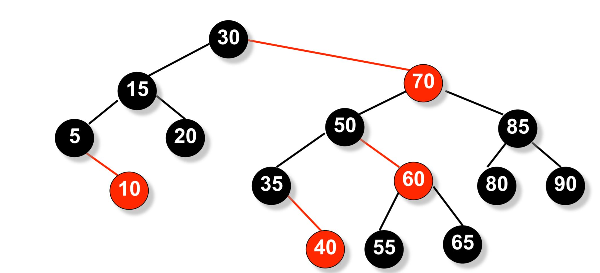
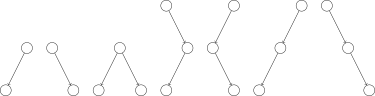
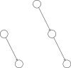
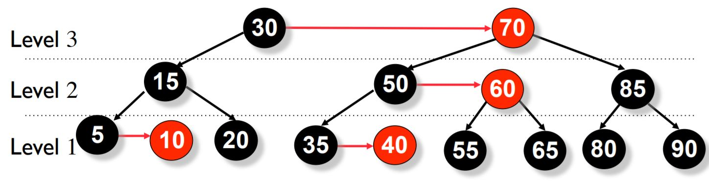
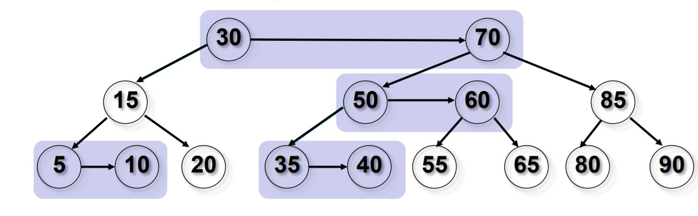
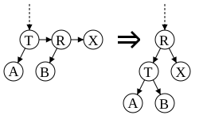
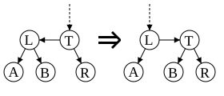

OI Wiki · prijevod · Strukture podatakaOI Wiki · translation · Data structures
AA stabloAA tree
Sadržaj
AA stablo balansirana je struktura stabla za učinkovitu pohranu i dohvat uređenih podataka. Profesor Arne Andersson predstavio ju je 1993. u radu „Balanced search trees made simple”, s ciljem smanjenja broja različitih slučajeva koje razmatra crveno-crno stablo. AA stablo podržava pretraživanje, umetanje i brisanje u vremenu \(O(\log N)\). Slijedi primjer AA stabla.

AA stablo inačica je crveno-crnog stabla, ali njegovi crveni čvorovi mogu biti samo desna djeca. Zbog toga AA stablo simulira 2-3 stablo, a ne 2-3-4 stablo, što znatno pojednostavnjuje održavanje. Algoritmi održavanja crveno-crnog stabla moraju razmotriti sedam različitih slučajeva kako bi ispravno uravnotežili stablo.

Budući da crveni čvorovi mogu biti samo desna djeca, AA stablo treba razmotriti samo dva slučaja.

Definicija
AA stablo slijedi ista pravila kao crveno-crno stablo, uz dodatno pravilo: crveni čvorovi ne smiju biti lijeva djeca.
- Svaki čvor može biti crven ili crn.
- Korijen je uvijek crn.
- Listovi (NULL) uvijek su crni.
- Oba djeteta crvenog čvora moraju biti crna; nema dvaju susjednih crvenih čvorova.
- Svaki put od korijena do NULL čvora ima jednak broj crnih čvorova.
- Crveni čvorovi mogu biti samo desna djeca.
Održavanje ravnoteže
Svaki čvor AA stabla održava polje level, slično polju color („RED” ili „BLACK”) u crveno-crnom stablu. Vrijednosti level zadovoljavaju sljedećih 5 uvjeta:
-
Level svakog lista iznosi 1.
-
Level svakog lijevog djeteta za 1 je manji od levela njegova roditelja.
-
Level svakog desnog djeteta jednak je levelu njegova roditelja ili je za 1 manji.
-
Level svakog desnog unuka strogo je manji od levela njegova djeda.
-
Svaki čvor s levelom većim od 1 ima dvoje djece.

Horizontalna veza (Horizontal Link)
Vezu u kojoj dijete ima isti level kao roditelj nazivamo horizontalnom vezom, slično crvenoj vezi u crveno-crnom stablu. Dopuštena je pojedinačna desna horizontalna veza, ali ne i uzastopne desne horizontalne veze; lijeve horizontalne veze nisu dopuštene. Ta su ograničenja stroža od onih u crveno-crnom stablu, pa je postupak balansiranja AA stabla programski znatno jednostavniji.

Umetanje i brisanje mogu privremeno narušiti ravnotežu AA stabla (odnosno njegove invarijante). Za obnovu ravnoteže potrebne su samo dvije operacije: skew (ukošavanje) i split (razdvajanje). Skew desnom rotacijom pretvara podstablo s lijevom horizontalnom vezom u podstablo s desnom horizontalnom vezom. Split izvodi lijevu rotaciju i povećava level, pretvarajući podstablo s dvjema ili više uzastopnih desnih horizontalnih veza u podstablo s dvije takve veze manje. Implementacije umetanja i brisanja dodatno se pojednostavnjuju tako što same operacije skew i split mijenjaju stablo samo kada je potrebno, umjesto da pozivatelj odlučuje treba li ih izvesti.
split (lijeva rotacija)
Pojavljuje se niz uzastopnih desnih horizontalnih veza (tri uzastopna čvora udesno imaju isti level, a čvorovi R i X crveni su).
Tada rotiramo čvor T ulijevo, promatrajući čvorove čiji je level manji ili jednak tom levelu kao jedno podstablo.
- Desno dijete korijena podstabla postaje novi korijen podstabla;
- Stari korijen postaje lijevo dijete novog korijena;
- Level novog korijena povećava se za 1.

Implementacija u pseudokodu
skew (desna rotacija)
Pojavljuje se lijeva horizontalna veza (dva uzastopna čvora ulijevo imaju isti level).
Rotiramo čvor T udesno, promatrajući čvorove čiji je level manji ili jednak tom levelu kao jedno podstablo.
- Lijevo dijete korijena podstabla postaje novi korijen podstabla;
- Stari korijen postaje desno dijete novog korijena.

Implementacija u pseudokodu
Operacije AA stabla
AA stablo ujedno je binarno stablo pretraživanja, pa je pretraživanje isto kao u drugim binarnim stablima pretraživanja. Umetanje i brisanje slični su onima u AVL stablu: najprije umetnemo ili izbrišemo ključ, a zatim se vraćamo duž puta pretraživanja prema korijenu i pritom preoblikujemo stablo.
Umetanje
Implementacija u pseudokodu
Brisanje
Brisanje je slično onome u drugim balansiranim binarnim stablima: brisanje unutarnjeg čvora najprije svodimo na brisanje lista. Unutarnji čvor zamijenimo njegovim najbližim prethodnikom ili sljedbenikom. Budući da u AA stablu svi čvorovi s levelom većim od 1 imaju dvoje djece, prethodnik ili sljedbenik bit će na levelu 1, gdje je brisanje jednostavnije.
Implementacija u pseudokodu
Učinkovitost
Učinkovitost AA stabla usporediva je s učinkovitošću crveno-crnog stabla. Iako AA stablo izvodi više rotacija, njegovi su algoritmi jednostavniji, pa je konačna učinkovitost slična. Crveno-crna stabla u različitim slučajevima imaju ujednačeniju učinkovitost, dok su AA stabla obično plića, što im daje nešto brže pretraživanje.
Literatura
Contents
An AA tree is a balanced tree structure for efficiently storing and retrieving ordered data. Professor Arne Andersson introduced it in his 1993 paper "Balanced search trees made simple", aiming to reduce the number of cases considered by red-black trees. An AA tree supports search, insertion, and deletion in \(O(\log N)\) time. An example is shown below.
An AA tree is a variant of a red-black tree, but its red nodes can only be right children. As a result, it simulates a 2-3 tree rather than a 2-3-4 tree, greatly simplifying maintenance. Red-black tree maintenance algorithms must consider seven different cases to balance the tree correctly.
Because red nodes can only be right children, an AA tree only needs to consider two cases.
Definition
An AA tree follows the same rules as a red-black tree, with one additional rule: red nodes cannot be left children.
- Every node can be red or black.
- The root is always black.
- Leaves (NULL) are always black.
- Both children of a red node must be black; there are no two adjacent red nodes.
- Every path from the root to a NULL node has the same number of black nodes.
- Red nodes can only be right children.
Maintaining balance
Each AA tree node maintains a level field, similar to the color field ("RED" or "BLACK") in a red-black tree. The levels satisfy the following 5 conditions:
-
The level of every leaf is 1.
-
The level of every left child is one less than its parent's level.
-
The level of every right child equals its parent's level or is one less.
-
The level of every right grandchild is strictly less than its grandparent's level.
-
Every node with a level greater than 1 has two children.
Horizontal link (Horizontal Link)
A link whose child has the same level as its parent is called a horizontal link, similar to a red link in a red-black tree. A single right horizontal link is allowed, but consecutive right horizontal links are not; left horizontal links are forbidden. These restrictions are stricter than those of a red-black tree, making AA tree balancing much simpler to implement.
Insertion and deletion may temporarily unbalance an AA tree (violate its invariants). Restoring balance requires only two operations: skew and split. Skew performs a right rotation on a subtree with a left horizontal link, replacing it with a subtree with a right horizontal link. Split performs a left rotation and increases the level, replacing a subtree with two or more consecutive right horizontal links with one having two fewer consecutive right horizontal links. Insertion and deletion are further simplified by letting skew and split modify the tree only when needed, rather than having the caller decide whether to perform them.
split (left rotation)
A chain of consecutive right horizontal links occurs (three consecutive nodes to the right have the same level, and nodes R and X are red).
Rotate node T to the left, treating nodes at or below this level as a subtree.
- The right child of the subtree root becomes the new subtree root;
- The old subtree root becomes the left child of the new root;
- The new subtree root's level increases by 1.
Pseudocode implementation
skew (right rotation)
A left horizontal link occurs (two consecutive nodes to the left have the same level).
Rotate node T to the right, treating nodes at or below this level as a subtree.
- The left child of the subtree root becomes the new subtree root;
- The old subtree root becomes the right child of the new root.
Pseudocode implementation
AA tree operations
An AA tree is itself a binary search tree, so searching is the same as in other binary search trees. Insertion and deletion are the same as in an AVL tree: first insert or delete the key, then retrace the search path to the root, restructuring the tree along the way.
Insertion
Pseudocode implementation
Deletion
Deletion is similar to deletion in other balanced binary trees: first reduce deleting an internal node to deleting a leaf. Replace the internal node with its closest predecessor or successor. Since every AA tree node with a level greater than 1 has two children, the predecessor or successor will be at level 1, where deletion is simpler.
Pseudocode implementation
Performance
AA trees perform comparably to red-black trees. Although AA trees perform more rotations, their algorithms are simpler, resulting in similar overall performance. Red-black trees perform more consistently across different situations, while AA trees tend to be flatter, giving them slightly faster searches.